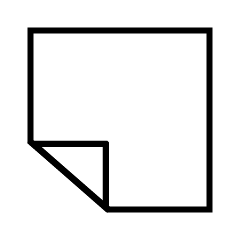
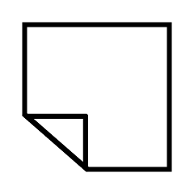

These icons were made using SVG. They are more pinpoint accurate than Adobe Illustrator's, but it takes longer to calculate the coordinates for each point.


These icons were made using Adobe Illustrator. You could use artboards to organize your drawings, and it was easier to visually see what you were drawing.
 



Objective: Make navigation icons that are frequently used on websites in Adobe Illustrator.
Problem: They aren’t applicable to every background.
Solution: Duplicated them to experiment with different background and foreground colors.